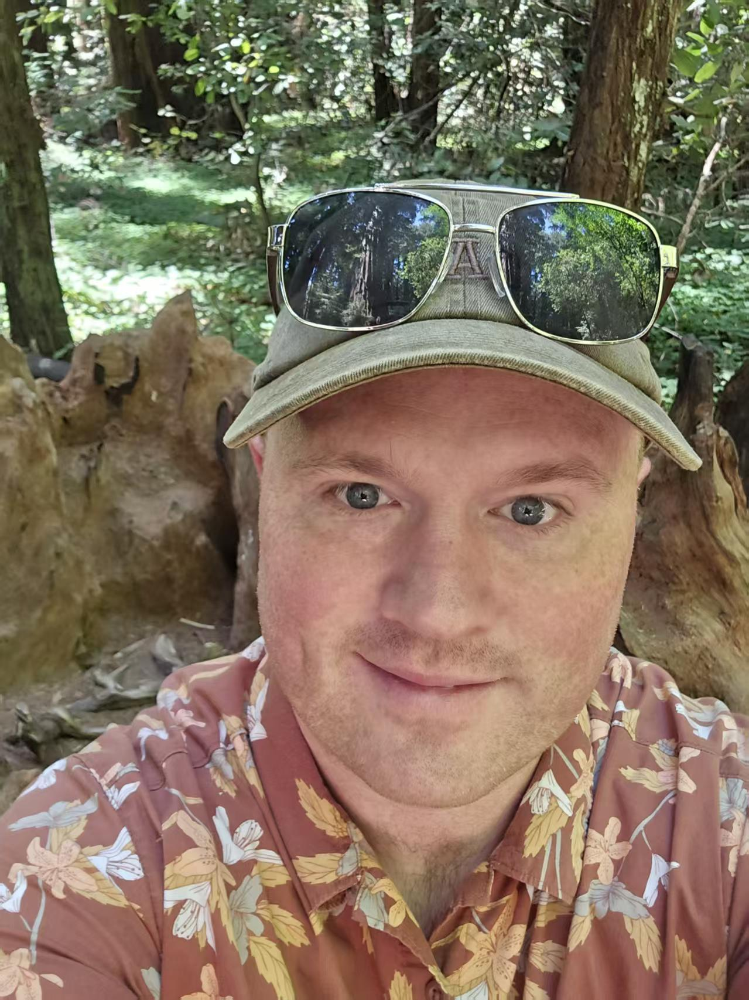
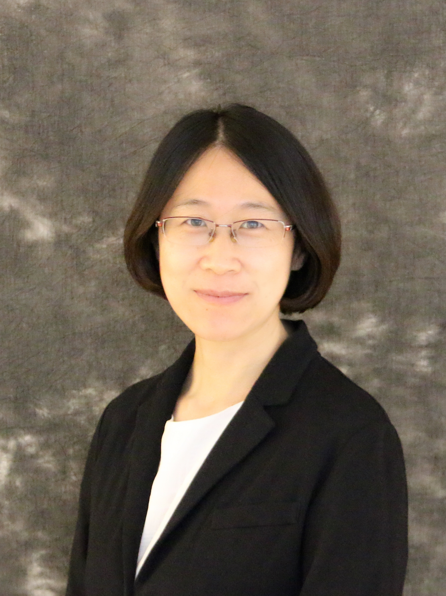

Mr. Nate
全名Nathaniel Westfall，教授高一化学和高三生物。性格很和蔼，可以随时请教问题。
上课可以昏倒的程度，讲课语速有点快导致我经常听的一知半解。期中期末题巨多而且难，需要背他给的study guide而且有一堆计算。平时作业需要按时交（不得不说其实作业也很莫名其妙，填词经常不会写），其他的project和pre什么的给分很善良 ——11
在本页中，你可以了解到校内的课程详情，以及教授这些课程的老师们。除了基础的信息以外，这里也有一些学生经验的分享，如怎样准备这门课的quiz、如何与这位老师相处等。
本页贡献者：Tweet-META、11
正如校内板块中所说，我校的课程分为美方课程和中方课程。详细来说，美方课程包括文学1-4、物理、化学、美国历史、大部分选修课程，中方课程则包括合格考要求的科目、为国际方向做准备的部分课程、和少部分选修课程。
由于课程种类较多，后文将按年级分类课程，也方便大家查阅。

全名Nathaniel Westfall，教授高一化学和高三生物。性格很和蔼，可以随时请教问题。
上课可以昏倒的程度，讲课语速有点快导致我经常听的一知半解。期中期末题巨多而且难，需要背他给的study guide而且有一堆计算。平时作业需要按时交（不得不说其实作业也很莫名其妙，填词经常不会写），其他的project和pre什么的给分很善良 ——11
教授高二AP微观经济，待人友善，十分乐于为学生答疑解惑。同学们若有疑问，可以直接前往二楼她的办公室向她请教。

教授AP Precalculus, AP Calculus和AP Statistics。